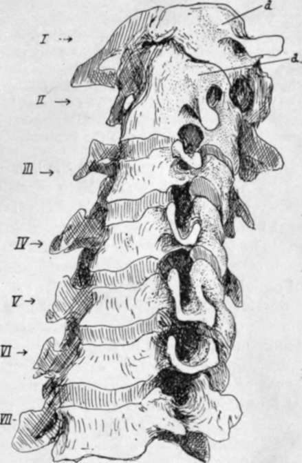

Detailed Consideration Of Cervical Vertebrae. Part 2
Description
This section is from the book "The Anatomy Of The Human Skeleton", by J. Ernest Frazer. Also available from Amazon: The anatomy of the human skeleton.
Detailed Consideration Of Cervical Vertebrae. Part 2
The first two cervical nerves differ from all other spinal nerves in issuing behind the articular masses. The explanation is that the articular masses concerned are morphologically different from those lower down. If the upper surfaces of the bodies of the middle and lower cervical vertebras are inspected, a prominent neuro-central lip is seen standing up outside the junction of the costal element and neural arch with the centrum : in the recent state a small synovial cavity lies between this Up and the bone above, outside and behind the intervertebral disc.
Fig. 16.-Cervical vertebra: articulated to show the transverse processes for comparison.
* Each cervical nerve is above its vertebra: the eighth is therefore above i D.V. and below 7 C.V. So the first dorsal nerve is below its vertebra, as are the remaining spinal nerves.
From its position this cavity is in front of the issuing nerve : the cavities increase in size in the upper part of the column, and their bases become the functional articular processes on the Atlas and top of Axis, so that the issuing nerves lie behind them. These small cavities are evidently in series with the costo-vertebral joints in the dorsal region ; inspection of the direction of the bony fibres in the surface texture at the junction of costal element with body suggests that they are ossified representatives of the stellate ligaments of the rib heads.
The Vertebrarterial (costo-vertebral, costo-transverse) foramen transmits the artery with its accompanying veins and a sympathetic plexus from the lower cervical ganglion ; it is subdivided in the fifth and sixth segments, the small posterior part being for a vein, and the subdivision may be present in the seventh and is occasionally suggested by bony spicules in the third and fourth. The seventh foramen only transmits a vein and a filament (grey ramus) from the ganglion running up to join the seventh nerve. The ganglion is situated beside the vertebral artery below the level of the seventh costal process, so that its filament to the eighth nerve reaches it directly, but that to the seventh must ascend through the foramen.
At the top of the column the line of the arterial channel turns sharply outwards in the Axis and is thus able to reach the foramen in the Atlas : observe that the transverse process of the Atlas extends further out than any other in the series, the next in range being that of the seventh.
The laminae increase in depth from the third downwards. They tend to overlap each other, so that the Ligamenta subflava, which are attached to the upper borders of each lamina, pass up deep to the lower borders of the laminae above and reach their anterior surface : their attachment here is marked by a transverse ridge on the neural surface of the laminae. The superficial or posterior surface is roughened by marks of tendinous insertions of Multifidus spinas : these are near the lower edges and the spines, on to which they extend. Outside the laminae are tuberculated areas on the backs of the inferior articular processes of the lower four segments : the upper fibres of Multifidus arise here, and outside them is the origin of the more superficial next layers, Semispinalis, Complexus, and Trachelo-mastoid. The compound nature of these markings on the articular processes is sometimes apparent, particularly on the fifth vertebra, where a strong fasciculus of Multifidus frequently makes the inner portion of the marking into a more or less prominent tubercle (Fig. 17).
The insertions of the still more superficial Cervicalis ascendens and Transversus cervicis are on to the backs of the transverse processes, further out and further forward.
The divergent points of the spinous processes afford insertion to Semispinalis colli, and the small prominences on their inner sides, that give them an angled appearance, mark the attachment of the bilaminar ligamentum nuchas. A median ridge on the under aspect of the spine shows the attachment of the weak interspinous ligament, corresponding with the median upper ridge on the bone below.
The seventh spine is non-bifid, and this is frequently the case also in the sixth- and above this-a condition normal in lower races ; but even when this occurs there is a distinct suggestion of its double nature, which is not found in the last cervical spine.
Continue to:
- prev: Detailed Consideration Of Cervical Vertebrae
- Table of Contents
- next: Detailed Consideration Of Cervical Vertebrae. Part 3